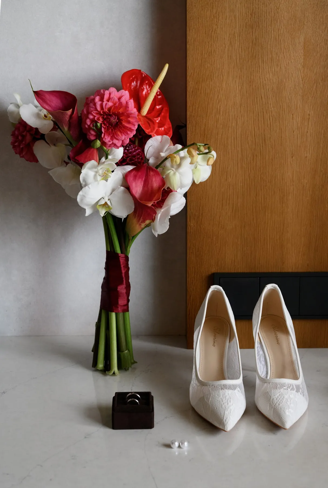
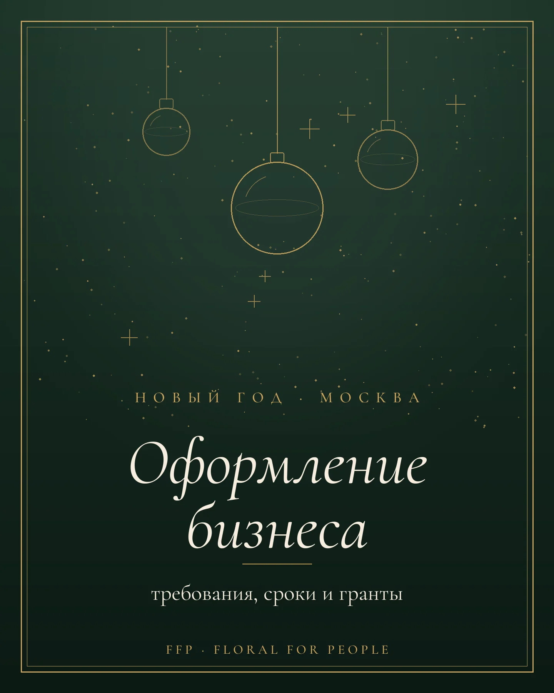
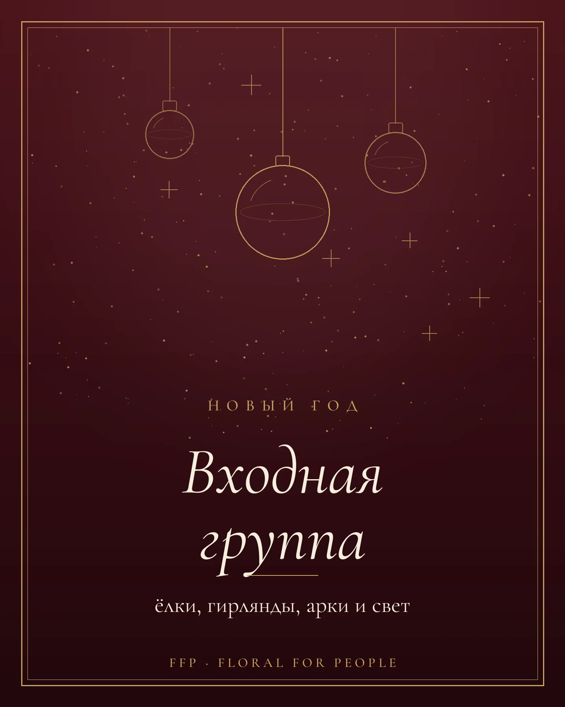

P · 01
Флористический декор для свадеб и мероприятийМосква · Комо · Дубай · Кипр · Бодрум
Студия флористического декора FFP — Floral for People. Свадьбы, корпоративы и камерные мероприятия в Москве и по миру.
Мы не декорируем пространство — мы создаём язык, на котором ваше мероприятие говорит о вас. Каждая ветка, каждый лепесток — часть вашей истории.
Декор из природных материалов помогает людям прожить событие через свои ценности и эмоции. Честные пропорции, ничего лишнего: декор работает фоном для людей, а не наоборот.
Декор работает не фоном, а соавтором: разговаривает с локацией, с историей пары, с временем года. От интимной церемонии до приёма на 300 гостей.
Свадебное предложение


Лён ложится мягкими складками — с него начинается стол.
Тарелки, приборы и бокалы задают ритм всей сервировки.
Высокие свечи поднимаются над столом и дают тёплый свет.
По центру прорастает живая гирлянда — зелень и бутоны.
Вечер: свечи, цветы и мягкое свечение вместе.
Выезжаем на площадку — от виллы на озере Комо до Дубая. Материалы, логистику и местную команду берём на себя. Ваша задача — выбрать место.
Полный цикл: концепция, флористика, сценография, локация. От интимной церемонии до приёма на 300 гостей.
Бренд-мероприятия, премии, ужины и презентации. Декор как продолжение айдентики, а не маркетинговый шум.
Дни рождения, юбилеи, частные ужины, камерные ивенты. Когда повод — это просто повод собраться.

Букет невесты: как выбрать форму, цветы и палитру
Новогоднее оформление бизнеса в Москве: что требует город, сроки и гранты до 2 млн ₽ Цвет свадьбы: как выбрать палитру — 6 палитр с наших свадеб
Цвет свадьбы: как выбрать палитру — 6 палитр с наших свадеб

Новогоднее оформление входной группы: ёлки, гирлянды, арки и свет Оформление свадьбы: с чего начать и из чего складывается декор
Оформление свадьбы: с чего начать и из чего складывается декор
 Фотозона на свадьбу: идеи, которые работают на фото
Фотозона на свадьбу: идеи, которые работают на фото